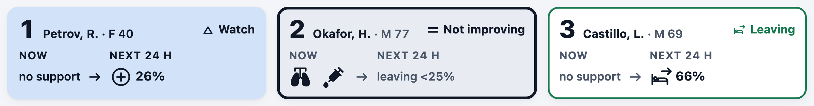
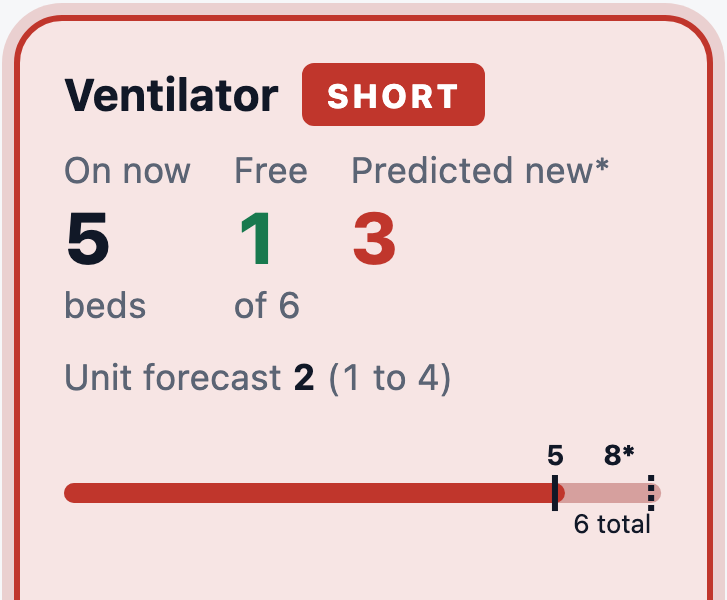
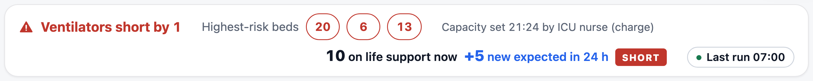

ICU Lookahead
Team 7 · CLIF · CIQ × NVIDIA Local AI Hackathon · Chicago · Nov 14–15, 2026
J.C. Rojas · Kaveri Chhikara · Vaishvik Chaudhari
Dema Therese · Zewei ('Whiskey') Liao
Demo data, made-up names. Not a medical device; for unit planning.
See the next 24 hours of your ICU. On machines you own.
ICU the hospital unit for the sickest patients. Life support keeps them alive: ventilator a breathing machine vasopressors drugs that hold blood pressure up CRRT continuous dialysis, a machine doing the kidneys' work
The problem: a small or rural ICU
A small hospital has few of these machines, no data-science team and no cloud contract. Three patients need a breathing machine, two are free: one is transferred hours away.
What we built: local compute
Two machines the hospital owns run everything. At 7 am the board shows five predictions per patient for the next 24 hours: ventilator, vasopressors, CRRT, leaving the ICU, death.



The unit: six ventilators, five in use, two beds flagged at 25% or more: SHORT by 1, a day ahead. Beds 20, 6 and 13 are the ones to see first. A bed's person icon turns red at the team's threshold; a tap opens its five chances and 12 hours of vital signs.
How we used CIQ Fuzzball and the stack: two models, two jobs
Every step is a Fuzzball workflow file.
- 1 · Learn the ICU's languageTrained to predict the next event in a chart (labs, vital signs, drugs, machines), like a language model predicts the next word.
- 2 · Take its last layerAt 07:00, one pass over each patient's chart so far. Keep the last layer's output: one vector for the patient's state.
- 3 · Five small classifiersOne per event clinicians plan around, fitted once in training on past patients with known outcomes. Each gives a percentage.
What is new
A patient model small enough to train from scratch on two desk-side GPUs. One pass and five small classifiers per patient, not thousands of simulated futures.
In the real world
Ran end to end on the two Lenovo machines under Fuzzball with one launch script. A hospital with CLIF tables can rerun it. 459 tests · held-out AUROC 0.77–0.93.
- Patient model size
- Training, 1 GPU against 2
- One unit forecast
- Model status
- Held-out accuracy
- AUROC 0.77–0.93
- Chat, tokens per second